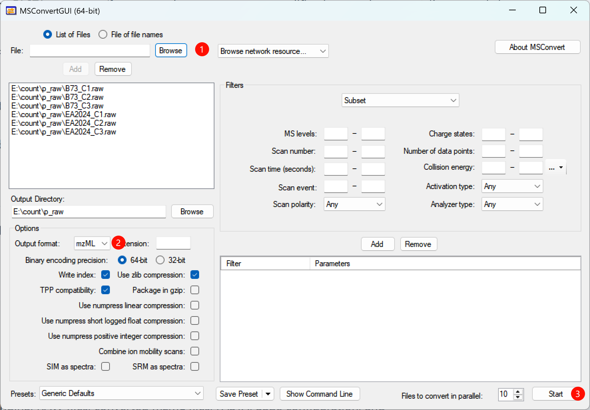

RAW → mzML on Windows
Recommended Windows route
On Windows, use ProteoWizard MSConvert for direct conversion of supported vendor RAW files to mzML. This is the preferred route for the Thermo .raw files used by the ProtVis PXD065315 example because ProteoWizard can use the Windows vendor readers required for direct RAW access.
The route is:
Vendor RAW → MSConvertGUI / msconvert.exe → mzML → ProtVis Project init → Sage Search → ProtVis_dataset
Download ProteoWizard / MSConvert
Use the official ProteoWizard resources:
Download the current 64-bit Windows installer unless your computer specifically requires another build. Record the ProteoWizard version used for conversion because conversion software is part of the analysis provenance.
Install on Windows
Run the installer and keep the standard MSConvert components. The current ProteoWizard Windows installer documentation requires Microsoft .NET Framework 4.7.2 or newer.
After installation, you should have:
- MSConvertGUI for graphical conversion;
- msconvert.exe for command-line conversion;
- SeeMS for inspecting open-format spectra.
A typical installation is inside a versioned directory under:
C:\Program Files\ProteoWizard\The exact subdirectory depends on the installed build.
Verify the installation
Open PowerShell or Command Prompt and run:
msconvert.exe --helpIf the command is not found, either run msconvert.exe using its full path or add the ProteoWizard installation directory to PATH.
Convert with MSConvertGUI
The annotated screenshot below shows the six PXD065315 control RAW files. The three red markers indicate the core workflow: 1 choose the RAW files, 2 select mzML, and 3 start conversion.

1. Add RAW files
Click Browse and add one or more vendor RAW files. Convert all samples in one batch whenever possible so they receive identical settings.
For the ProtVis PXD065315 control example:
B73_C1.raw
B73_C2.raw
B73_C3.raw
EA2024_C1.raw
EA2024_C2.raw
EA2024_C3.raw2. Use a separate output directory
Do not mix converted mzML files with the original RAW files. For example:
E:\count\p_raw\ # original RAW
E:\count\p_mzML\ # converted mzMLSelect E:\count\p_mzML\ as the Output Directory.
3. Set the output format
Use:
Output format: mzMLLeave Package in gzip off because ProtVis expects ordinary .mzML filenames in the current Raw workflow.
4. Keep zlib compression enabled
Recommended:
Write index: enabled
Use zlib compression: enabled
Binary encoding precision: 64-bitzlib reduces file size without changing the numerical spectra. Numpress options are not required for this workflow and can remain disabled unless they are part of a validated pipeline.
5. Decide whether Peak Picking is required
If the RAW file contains profile-mode spectra that should be centroided before Sage searching, add the Peak Picking filter. For Thermo data, use vendor peak picking when available and place Peak Picking first in the filter list.
A commonly used command-line equivalent is:
peakPicking true 1-This means peak picking from MS1 upward.
If the acquisition is already centroided, do not add Peak Picking simply because the option exists. Redundant centroiding can unnecessarily alter the spectra. Confirm the acquisition mode before conversion.
6. Choose a reasonable parallel file count
For a six-file conversion, 2–4 files in parallel is usually a safer starting point than launching all files simultaneously. Conversion can be disk-I/O and memory intensive.
7. Start conversion
Click Start and wait until all files complete without errors. The output filename stems should remain unchanged:
B73_C1.raw → B73_C1.mzML
B73_C2.raw → B73_C2.mzML
EA2024_C1.raw → EA2024_C1.mzMLConvert from the command line
One file
msconvert.exe "E:\count\p_raw\B73_C1.raw" --mzML --zlib --filter "peakPicking true 1-" -o "E:\count\p_mzML"All RAW files in a directory
msconvert.exe "E:\count\p_raw\*.raw" --mzML --zlib --filter "peakPicking true 1-" -o "E:\count\p_mzML"If the data are already centroided, omit the Peak Picking filter:
msconvert.exe "E:\count\p_raw\*.raw" --mzML --zlib -o "E:\count\p_mzML"Inspect the exact options provided by the installed build with:
msconvert.exe --help
msconvert.exe --show-examplesVerify the mzML output
Before opening ProtVis, confirm:
- the number of
.mzMLfiles matches the number of RAW files; - each output file is non-empty and has a plausible file size;
- the filename stems are unchanged;
- the MSConvert log contains no conversion errors;
- the data contain the expected MS levels, especially MS1 and MS2 for DDA proteomics;
- every sample was converted with the same settings.
Use SeeMS if you need to open an mzML file and inspect spectra manually.
PXD065315 example layout
PXD065315_control/
├── raw/
│ ├── B73_C1.raw
│ ├── B73_C2.raw
│ ├── B73_C3.raw
│ ├── EA2024_C1.raw
│ ├── EA2024_C2.raw
│ └── EA2024_C3.raw
└── mzML/
├── B73_C1.mzML
├── B73_C2.mzML
├── B73_C3.mzML
├── EA2024_C1.mzML
├── EA2024_C2.mzML
└── EA2024_C3.mzMLContinue into ProtVis
- Open Project init.
- Select Raw.
- Load/upload sample information containing
sample_idandmzml_file. - Upload the matching protein FASTA.
- Select the directory containing the
.mzMLfiles. - Click Check mzML files.
- Resolve every missing or invalid row.
- Click Project init.
- Open Search and run Sage.
Continue with Raw/mzML + Sage search.
Troubleshooting
MSConvert cannot read a RAW file. Confirm that the file is complete, the correct vendor reader is available, and conversion is being performed with a current Windows ProteoWizard installation.
The mzML files are unexpectedly huge. Confirm that zlib compression is enabled. Profile-mode data can also be much larger than centroided data.
Sage finds very few or no PSMs. First verify that the mzML contains valid MS2 spectra and that centroiding was appropriate. Then check FASTA, enzyme, modifications, precursor tolerance and fragment tolerance.
ProtVis reports files as missing. sample_info$mzml_file must exactly match the converted filename, including .mzML.
Reproducibility checklist
Record:
Operating system: Windows
ProteoWizard/MSConvert version:
Original vendor format:
Output format: mzML
zlib compression: yes/no
Peak Picking: yes/no
Peak Picking MS levels:
Additional filters:
Conversion date: